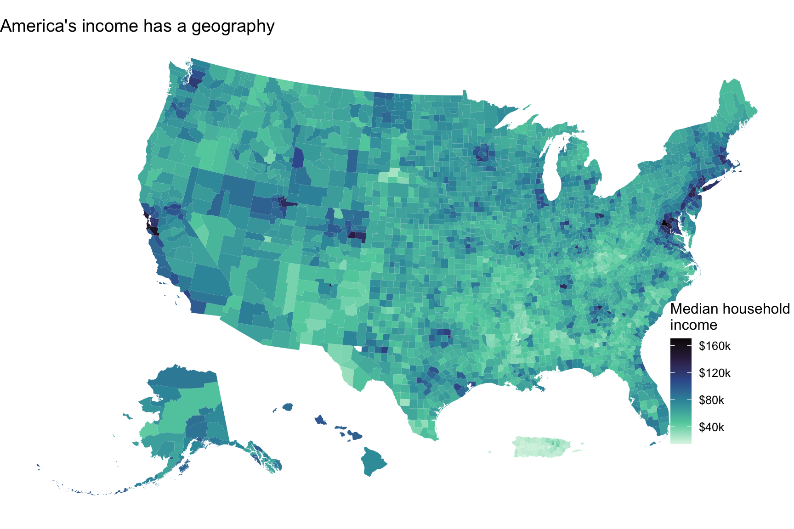

A single number — median household income for the United States — hides almost everything interesting. The country does not earn one income; it earns thousands of local ones, and they are not scattered at random. This post asks a concrete question with one map: where is household income high and low across the United States, and is that geography mostly a story of rich states versus poor states, or of divisions inside them?
The data
The map uses median household income by county from the U.S. Census Bureau’s American Community Survey (2018–2022 five-year estimates, table B19013), pulled directly in code with the tidycensus package, which also returns each county’s map boundary. Measuring at the county level — roughly 3,100 units — is the whole point: it shows variation that a state map would average away.
Code
# The first render pulls from the Census API and caches the result. Later renders# read the cache, so reproducing the map needs no key. Set refresh <- TRUE to re-pull.refresh <-FALSEcache <-here("blog", "posts", "post5", "data", "county_income.rds")if (!refresh &&file.exists(cache)) { counties <-readRDS(cache)} else { counties <-get_acs(geography ="county",variables =c(median_income ="B19013_001"),year =2022, survey ="acs5",geometry =TRUE, cb =TRUE ) |> tigris::shift_geometry() # tucks Alaska & Hawaii under the lower 48saveRDS(counties, cache)}counties <- counties |>filter(!is.na(estimate)) |>mutate(state_fips =str_sub(GEOID, 1, 2))
The map
Code
ggplot(counties) +geom_sf(aes(fill = estimate), color =NA) +scale_fill_viridis_c(option ="mako", direction =-1, labels =label_dollar(scale =1/1000, suffix ="k"),name ="Median household\nincome" ) +labs(title ="America's income has a geography") +theme_void(base_size =12) +theme(legend.position =c(0.92, 0.3))

Figure 1: Median household income by county, 2018–2022. Darker is higher. Income clusters in coastal metro corridors and a few interior hubs, with a continuous low-income band across the Deep South, Appalachia, and parts of the Southwest.
Two things jump out. First, high income is not spread evenly but clustered: the Northeast corridor from Washington to Boston, the San Francisco Bay Area, and a scatter of metro hubs glow darkest. Second, low income is just as organized — a near-continuous pale band runs across the Deep South and up through Appalachia, with another stretch across parts of the rural Southwest. The richest county (Loudoun County, Virginia, about $170,463) earns roughly 12 times the poorest (Guánica Municipio, Puerto Rico, about $14,525).
What the map reveals
The pattern is easy to read as “rich blue states, poor red states,” but the data say otherwise. Splitting the county-to-county income gap into a part between states (differences in state averages) and a part within states (differences among counties of the same state), the within-state share is about 63% — a clear majority. In other words, the sharpest income divides are mostly local: a wealthy suburban county and a poor rural one in the same state are often further apart than two average states are from each other. A state-level map would erase exactly the divide that matters most.
That is the reason to map income at the county level rather than report a national or even a state figure. The headline number tells you the country’s middle; the map tells you that the country does not really have one middle, but many — and that the distance between them is drawn inside state lines as much as across them.
Takeaway
Household income in America is geographically structured, not random, and most of its unevenness lives within states, not between them. For anyone reasoning about inequality, that is the practical lesson: the relevant unit is often the county or the metro, not the state — and certainly not the national average, which is an average of places that look very little like it.
One honest limit: this is a snapshot of levels, not causes. The map shows where income is high and low; it does not explain why, which would need data on industries, education, and migration the map alone can’t see.
Data source: U.S. Census Bureau, American Community Survey 2018–2022 five-year estimates, median household income (B19013_001), retrieved programmatically with the tidycensus R package, which also supplies county geometry; the pulled data are cached in data/ so the map reproduces without an API key. Code to reproduce is in the linked GitHub repository.
Source Code
---title: "Where Is America's Money? The Geography of Household Income"author: "Siyu Xin"date: 2026-10-19categories: - maps - inequalityformat: html: toc: true toc-depth: 2 code-fold: true code-tools: true theme: cosmoexecute: warning: false message: false---```{r}#| label: setup#| include: falselibrary(tidycensus)library(dplyr)library(stringr)library(ggplot2)library(scales)library(sf)library(here)# Census API key, set directly so the render process can see it.# (Optional: once data/county_income.rds is cached, you can delete this line# and later renders will read the cache without any key.)census_api_key("e166694d376e035fd06e0539259bf1819e9868f3")options(scipen =999)dir.create(here("blog", "posts", "post5", "data"), showWarnings =FALSE, recursive =TRUE)```# The questionA single number — median household income for the United States — hides almosteverything interesting. The country does not earn one income; it earns thousands oflocal ones, and they are not scattered at random. This post asks a concretequestion with one map: **where is household income high and low across the UnitedStates, and is that geography mostly a story of rich states versus poor states, orof divisions inside them?**# The dataThe map uses **median household income by county** from the U.S. Census Bureau'sAmerican Community Survey (2018–2022 five-year estimates, table `B19013`), pulleddirectly in code with the `tidycensus` package, which also returns each county'smap boundary. Measuring at the *county* level — roughly 3,100 units — is the wholepoint: it shows variation that a state map would average away.```{r}#| label: load-data# The first render pulls from the Census API and caches the result. Later renders# read the cache, so reproducing the map needs no key. Set refresh <- TRUE to re-pull.refresh <-FALSEcache <-here("blog", "posts", "post5", "data", "county_income.rds")if (!refresh &&file.exists(cache)) { counties <-readRDS(cache)} else { counties <-get_acs(geography ="county",variables =c(median_income ="B19013_001"),year =2022, survey ="acs5",geometry =TRUE, cb =TRUE ) |> tigris::shift_geometry() # tucks Alaska & Hawaii under the lower 48saveRDS(counties, cache)}counties <- counties |>filter(!is.na(estimate)) |>mutate(state_fips =str_sub(GEOID, 1, 2))``````{r}#| label: prose-stats#| include: falsen_cty <-nrow(counties)dat <- sf::st_drop_geometry(counties)richest <- dat |>slice_max(estimate, n =1)poorest <- dat |>slice_min(estimate, n =1)ratio <- richest$estimate / poorest$estimate# How much of the county income gap is WITHIN states vs BETWEEN states?grand <-mean(dat$estimate)total_ss <-sum((dat$estimate - grand)^2)between <- dat |>group_by(state_fips) |>summarise(m =mean(estimate), n =n(), .groups ="drop") |>summarise(ss =sum(n * (m - grand)^2)) |>pull(ss)within_share <-1- between / total_ss```# The map```{r}#| label: fig-map#| fig-cap: "Median household income by county, 2018–2022. Darker is higher. Income clusters in coastal metro corridors and a few interior hubs, with a continuous low-income band across the Deep South, Appalachia, and parts of the Southwest."#| fig-width: 9#| fig-height: 6ggplot(counties) +geom_sf(aes(fill = estimate), color =NA) +scale_fill_viridis_c(option ="mako", direction =-1, labels =label_dollar(scale =1/1000, suffix ="k"),name ="Median household\nincome" ) +labs(title ="America's income has a geography") +theme_void(base_size =12) +theme(legend.position =c(0.92, 0.3))```Two things jump out. First, high income is not spread evenly but **clustered**: theNortheast corridor from Washington to Boston, the San Francisco Bay Area, and ascatter of metro hubs glow darkest. Second, low income is just as organized — anear-continuous pale band runs across the Deep South and up through Appalachia, withanother stretch across parts of the rural Southwest. The richest county(`r richest$NAME`, about `r dollar(richest$estimate)`) earns roughly**`r round(ratio)` times** the poorest (`r poorest$NAME`, about`r dollar(poorest$estimate)`).# What the map revealsThe pattern is easy to read as "rich blue states, poor red states," but the data sayotherwise. Splitting the county-to-county income gap into a part *between* states(differences in state averages) and a part *within* states (differences amongcounties of the same state), the within-state share is about**`r percent(within_share, accuracy = 1)`** — a clear majority. In other words, thesharpest income divides are mostly **local**: a wealthy suburban county and a poorrural one in the *same* state are often further apart than two average states arefrom each other. A state-level map would erase exactly the divide that matters most.That is the reason to map income at the county level rather than report a national oreven a state figure. The headline number tells you the country's middle; the maptells you that the country does not really have one middle, but many — and that thedistance between them is drawn inside state lines as much as across them.# TakeawayHousehold income in America is geographically structured, not random, and most ofits unevenness lives *within* states, not between them. For anyone reasoning aboutinequality, that is the practical lesson: the relevant unit is often the county orthe metro, not the state — and certainly not the national average, which is anaverage of places that look very little like it.One honest limit: this is a snapshot of *levels*, not causes. The map shows whereincome is high and low; it does not explain why, which would need data on industries,education, and migration the map alone can't see.---*Data source: U.S. Census Bureau, American Community Survey 2018–2022 five-yearestimates, median household income (`B19013_001`), retrieved programmatically withthe `tidycensus` R package, which also supplies county geometry; the pulled data arecached in `data/` so the map reproduces without an API key. Code to reproduce is inthe linked GitHub repository.*